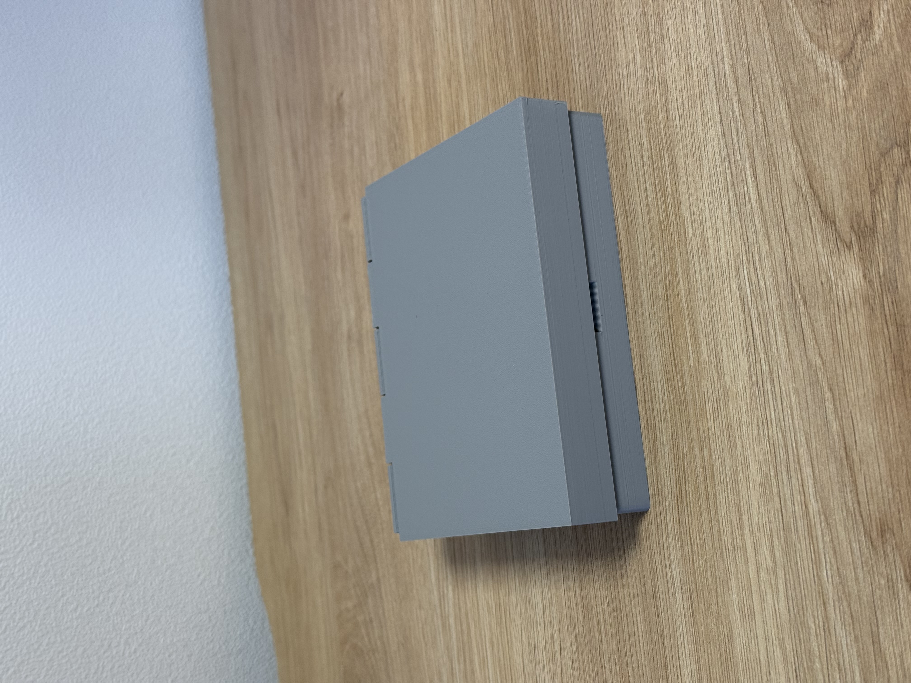
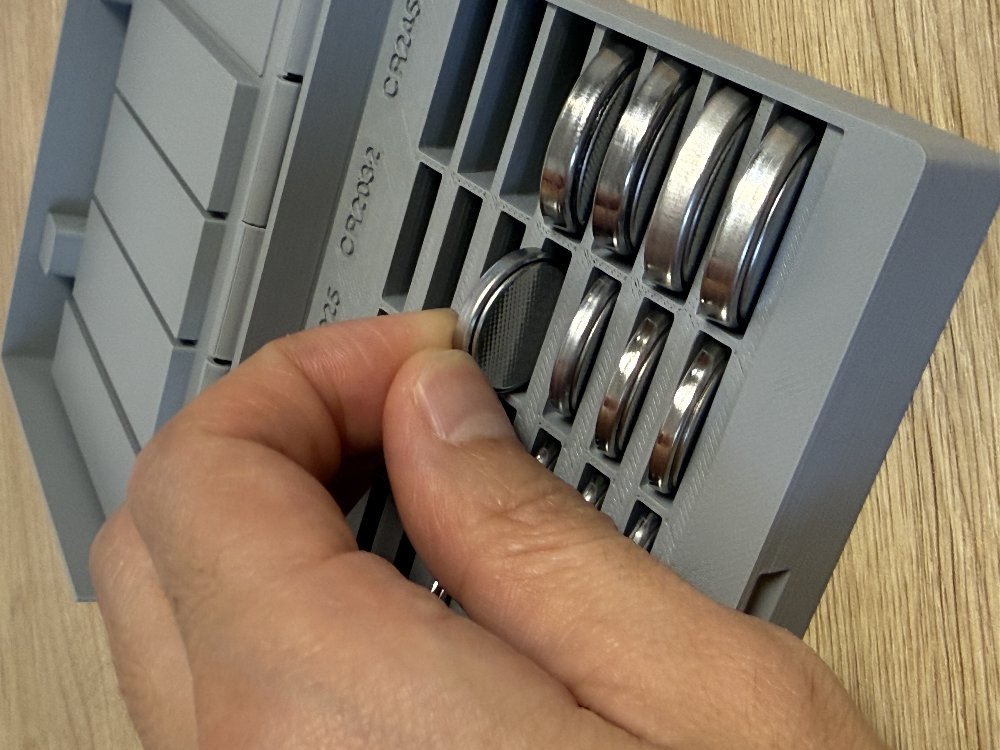
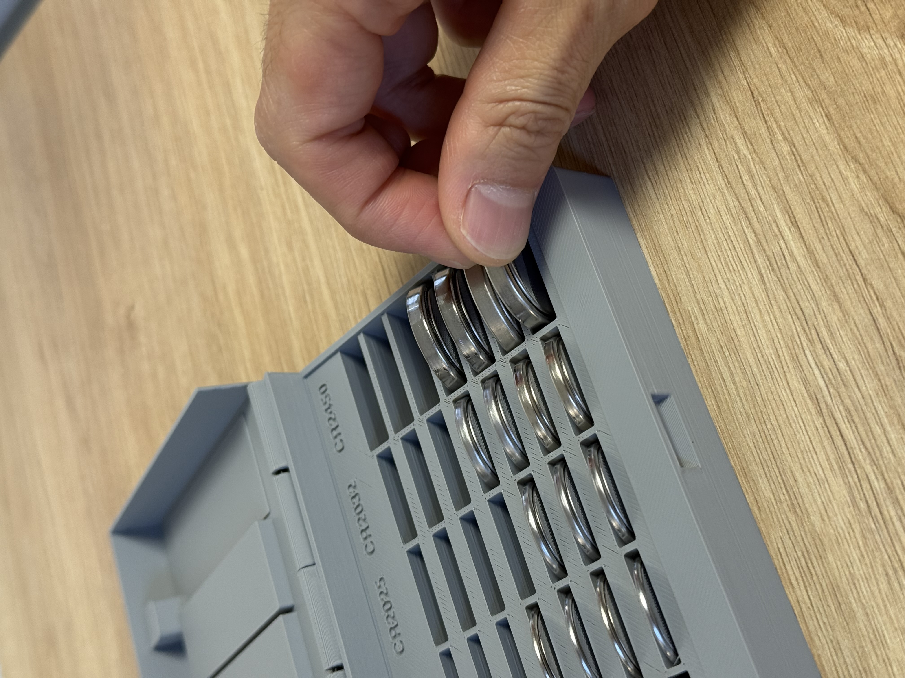

코인셀을 정리하고,
하나씩 꺼내세요.
20° 경사 슬롯 · 종류별 표기 · 보이지 않는 매립 자석.
뚜껑 안쪽 높이는 코인셀에 맞춰 달라집니다.
CR1632 · CR2016 · CR2025 · CR2032 · CR2450
각 7개, 총 35개 / 약 96.4 × 117 × 28.9mm
맞춤 편집 결과는 이 실물과 다른 시험판 형상입니다.
조립 3D — 실제 배포 STL
마우스로 회전 · 휠로 확대 · 터치로 회전·확대
3D를 불러오는 중…



자석을 넣고, 다음 층으로 덮습니다
Ø5×2mm 자석 4개와 Ø1.75mm 필라멘트 핀을 준비하세요. 홈은 Ø5.3×2.2mm입니다. 접착제와 별도 막음조각은 필요하지 않습니다.
| 부품 | 멈출 시점 (0.2mm 층) | 할 일 |
|---|---|---|
| 뚜껑 | 58층 시작 전 · 11.4mm 완성 | 자석 2개 삽입 |
| 몸통 | 84층 시작 전 · 16.6mm 완성 | 뚜껑과 끌어당기는 극성으로 2개 삽입 |
3MF에는 정지를 넣었습니다. STL에는 정지가 없으므로 직접 설정해야 합니다. 출력 방향·크기·층 높이를 바꾸면 다시 확인하세요. 뚜껑만 출력하는 3MF는 한 번 멈춥니다.
사진은 실제 출력물입니다. 고정형 부품은 제작자의 출력·사용 확인을 받았습니다. 전체 3MF는 성공한 몸통과 수정 뚜껑을 함께 배치한 파일이며, 이 조합 플레이트의 슬라이싱을 별도로 검사했습니다. 정량 흔들기·낙하·장기 내구성 시험을 의미하지 않습니다.
어린이 보호용 잠금 보관함이 아닙니다. 코인셀과 자석은 어린이의 손이 닿지 않게 보관하세요.